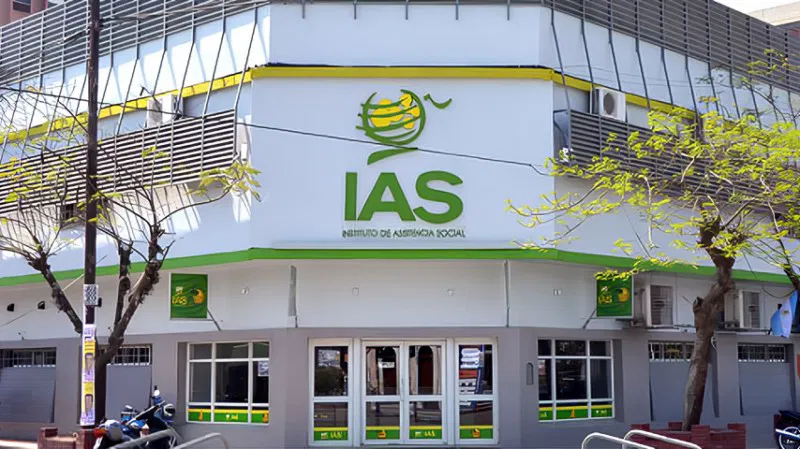

Bienvenidos
Definición Sobre IAS-Formosa
El Instituto de Asistencia Social (IAS) de Formosa es un organismo estatal que está encargado de regular y administrar los juegos al azar en la provincia, destinando sus recursos a programas de asistencia social y al desarrollo comunitario.
Función y Objectivos
El IAS de Formosa es una entidad con autarquía funcional y finaciera, que está creada por la Ley Provincial N°1348, tiene como objectivo principal en obtener recursos mediante la explotación de juegos al azar para en planes y programas de acción social, asistencia comunicataria y en obras públicas en la provincia. Incluye la regulación, la comercialización y concesión de loterias,casinos,bingos,quinielas y otros juegos al azar, ya sea tanto presenciales como virtuales.

